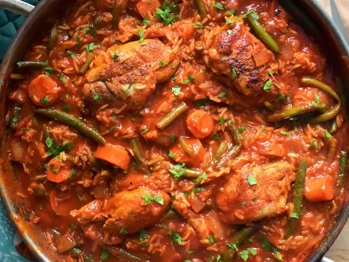

Jollof rice is a popular West African dish made with rice, tomatoes, onions, and a variety of spices.
It is often served with meat or fish and is a staple at many celebrations and gatherings.
Pour oil into large saucepan. Cook onion in oil over medium-low heat until
translucent.
Stir in stewed tomatoes and tomato paste, and season with salt, black pepper,
cayenne pepper, red pepper flakes, Worcestershire sauce and rosemary. Cover,
and bring to a boil. Reduce heat, stir in water, and add chicken pieces. Simmer
for 30 minutes.
Stir in rice, carrots, and green beans, and season with nutmeg. Bring to a boil,
then reduce heat to low. Cover, and simmer until the chicken is fork-tender and
the rice is cooked, 25 to 30 minutes.